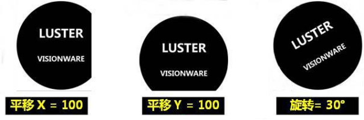
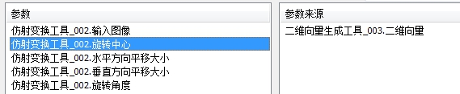
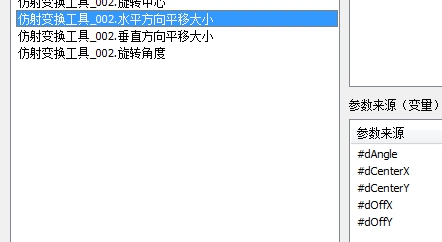

Công cụ biến đổi Affine là một trong những công cụ tiền xử lý phổ biến, dùng để thực hiện biến đổi affine (bao gồm tịnh tiến và xoay) lên ảnh đầu vào, sau đó xuất ra ảnh đã biến đổi để xử lý tiếp theo.

| Phân loại | Tên tham số | Mô tả tham số |
|---|---|---|
| Cửa sổ thuộc tính | Cắt về cùng kích thước ảnh gốc | Có: Ảnh sau biến đổi affine sẽ có kích thước bằng ảnh gốc. Nếu biến đổi làm thay đổi kích thước, kết quả cuối cùng sẽ bị cắt để bằng ảnh gốc. Không: Cho phép tự định nghĩa kích thước ảnh đầu ra thông qua “Chiều rộng ảnh đầu ra” và “Chiều cao ảnh đầu ra”. |
| Chiều rộng ảnh đầu ra | Người dùng tự đặt chiều rộng ảnh đầu ra. Chỉ có hiệu lực khi “Cắt về cùng kích thước ảnh gốc” = Không. | |
| Chiều cao ảnh đầu ra | Người dùng tự đặt chiều cao ảnh đầu ra. Chỉ có hiệu lực khi “Cắt về cùng kích thước ảnh gốc” = Không. | |
| Lật ảnh | Không lật / Lật ngang / Lật dọc / Lật cả ngang và dọc. | |
| Có phóng to/thu nhỏ không | Có thực hiện phóng to/thu nhỏ theo trục X và Y hay không. | |
| Hệ số phóng to X | Hệ số phóng to/thu nhỏ theo trục X. | |
| Hệ số phóng to Y | Hệ số phóng to/thu nhỏ theo trục Y. | |
| Tâm X (Center X) | Tọa độ X của tâm xoay/phóng to. | |
| Tâm Y (Center Y) | Tọa độ Y của tâm xoay/phóng to. | |
| Loại đơn vị góc xoay | Độ (degree): tham số “Góc xoay” trong chuỗi dữ liệu tính bằng độ. Radian: tham số “Góc xoay” tính bằng radian. |
|
| Cửa sổ ảnh | Edit | Hiển thị ảnh gốc. |
| Chuỗi dữ liệu | Ảnh đầu vào | Ảnh cần thực hiện biến đổi affine. |
| Tâm xoay | Kiểu vector 2D, phần tử là double. Biểu thị tâm của phép xoay. | |
| Độ dịch ngang | Kiểu double. Độ dịch theo phương ngang, đơn vị pixel. | |
| Độ dịch dọc | Kiểu double. Độ dịch theo phương dọc, đơn vị pixel. | |
| Góc xoay | Kiểu double. Góc xoay (ngược chiều kim đồng hồ là dương). Đơn vị giống với cài đặt “Loại đơn vị góc xoay” ở cửa sổ thuộc tính. | |
| Giao diện nâng cao | Không có | Không có tham số nào. |
| Phân loại | Tên tham số | Mô tả tham số |
|---|---|---|
| Cửa sổ giám sát | Ảnh đầu vào | Hiển thị chiều rộng, chiều cao và thông tin pixel của ảnh gốc. |
| Ảnh đầu ra | Hiển thị chiều rộng, chiều cao và thông tin pixel của ảnh sau biến đổi affine. | |
| Kết quả thực thi | Kết quả thực thi của công cụ. | |
| Thời gian thực thi | Thời gian công cụ thực hiện xử lý. | |
| Cửa sổ ảnh | Result | Hiển thị ảnh sau biến đổi affine. |
| Tùy chỉnh hiển thị | Hiển thị ảnh sau biến đổi affine. | |
| Kết quả thực thi | Thành công hiển thị “OK”, thất bại hiển thị “NG” (giống kết quả ở cửa sổ giám sát). | |
| Chuỗi dữ liệu | Ảnh đầu ra | Ảnh đã qua biến đổi affine, cung cấp cho các công cụ tiếp theo. |
Không có


参见“\Samples\仿射变换工具.gvp”。